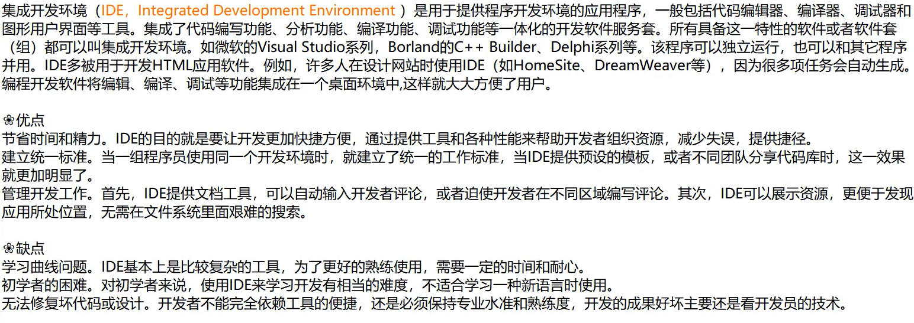
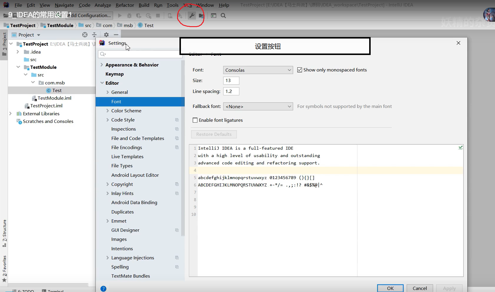

IDE的概念：

IDEA


IDEA页面展示：
1、view--->Appearance---->Tool Window Bars(显示周围的菜单框)
2、view--->Appearance---->ToolBar(显示上层快捷工具)
3、view--->Appearance---->statusBar(显示右下角的 )
)
)
IDEA Module的概念和使用：


在删除项目（module）的时候，需要删除两次。
IDEA的常用设置

1、进入设置

2、设置主题

3、编辑区的字体变大或者变小

4、鼠标悬浮在代码上有提示

5、自动导包和优化多余的包

6、同一个包下的类，超过指定个数的时候，导包合并为*

7、显示行号，方法和方法间的分隔符

8、忽略大小写，进行提示

9、多个类不隐藏，多行显示

10、设置默认的字体，字体大小，字体行间距（编辑区和控制台都会变化）

11、修改代码中注释的颜色

12、修改类头的文档注释信息（对新建的类才有效）

13、设置项目文件的编码格式

文件右下角可以调节编码格式

14、自动编译

15、省电模式（省电模式是没有代码提示功能和其他一些额外功能的）

16、代码结构展示（类似于分屏）

17、导入jar包

18、生成序列化版本号

IDEA常用快捷键


idea字体放大和缩小的快捷键

代码一层层调用的快捷键
点进源码：ctrl+鼠标点击

模板的使用：


常用的模板

创建代码模板：